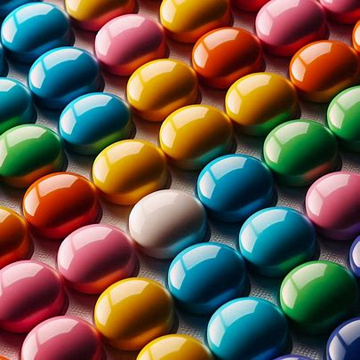
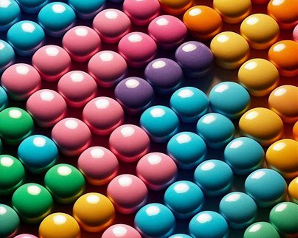

Vi ønsker å være en ansvarlig aktør.
Omtanke for mennesker, miljø og dyr er derfor viktig for oss når vi i Nidar utvikler våre produkter.
Nidar-fabrikken har en restriktiv holdning til bruk av tilsetningsstoffer. Vi bruker kun tilsetningsstoffer som er grundig utprøvd, og der det er mulig bruker vi naturlige tilsetningsstoffer.
I mer enn 100 år har vi laget godteri og sjokolade i Trondheim, og mange av merkene våre har en lang og rik historie.
På Nidar-fabrikken i Trondheim er vi stolte av historien vår, og hva den betyr for norsk kultur.
Vi ønsker ikke å bruke genmodifiserte organismer (GMO), og krever at underleverandører ikke har GMO i sine produkter. Alle Nidars produkter er derfor uten GMO.

Hver eneste dag blir tusenvis av sjokolader, seigmenn, karameller og andre godsaker til på fabrikken vår i Trondheim.
Bak hver eneste eske med godteri ligger et omfattende arbeid, mye kjærlighet og glede.